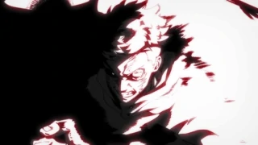

Black Flash is a distortion in space that occurs when
cursed energy is applied within 0.000001 seconds of a
physical hit. When a sorcerer is able to achieve this,
their cursed energy flashes black, and the destructive
power of their strike is equal to a normal hit to the
power of 2.5.
This technique is not too disimilar Yuji's Divergent
Fist. However, when it comes to black flash, you are
expected to control the flow of cursed energy so well
that it is applied within 0.000001 seconds. Which is
almost equal to zero.
Black Flash can be thought of as what athletes refer to
as the “zone”. This is due to the fact that it increases
their chances of landing a heavy attack, increases the
power of their follow-up attacks, and it increase the
probability that they will hit their opponent with
another Black Flash attack.
Jujutsu sorcerers need to have an excellent
understanding of cursed energy and incredible
concentration to land a Black Flash. For this reason, it
is usually uncommon amongst sorcerers. Contrary to how
“uncommon” it is, Black Flash is still more commonly
used by special-grade or higher-grade jujutsu sorcerers.
Unleashing Black Flash requires incredible concentration
and no jujutsu sorcerer is capable of using doing so at
will, not even Satoru Gojo. It does not occur randomly
and requires immense skill and combat potential to pull
off.
Jujutsu users who manage to unleash Black Flash
immediately gain an immeasurably higher understanding of
the essence of cursed energy when compared to someone
who has never used it.
Anyone who succeeds in landing Black Flash will
temporarily enter a state of increased cursed energy
awareness, where the mental process of manipulating
cursed energy becomes as simple as breathing for them.
This leads to a greatly increased performance in combat,
allowing the user to operate at 120% of their maximum
potential.

Nanami believes that using Black Flash consecutive times
isn't anything to celebrate. After unleashing Black
Flash more than once, doing so repeatedly becomes a much
easier task.
Nanami's record four consecutive Black Flashes were
against cursed spirits during the Night Parade of a
Hundred Demons in Kyoto.
During the Goodwill Event, Aoi Todo was able to teach
Yuji how to harness his cursed energy by properly timing
it with his superhuman speed and strength. By explaining
how to make his cursed energy flow properly and pitting
Yuji against Hanami, Todo was able to help Yuji unleash
Black Flash against the special grade curse.
Yuji's first Black Flash dealt a great deal of damage to
Hanami. While "in the zone" Yuji was able to land a rush
of four Black Flashes that completely overpowered the
special grade curse. This rush tied Kento Nanami's
record of four consecutive Black Flash strikes.
While fighting two-on-two against Eso & Kechizu, Yuji
and Nobara both used Black Flash together to defeat the
Death Paintings. Yuji's punch destroyed Eso's arm
entirely, and so quickly that the special grade couldn't
even react.
Yuji is not the only character to be seen using Black
Flash. After emotionally breaking Yuji Itadori by near
fatally injuring Nobara Kugisaki, Mahito landed a Black
Flash strike on the unprepared Yuji, launching the boy
across Shibuya Station and overwhelming him with
numerous attacks. He once again used it against Aoi Todo
after weakening him with Idle Transfiguration.